GPT-5.6 Sol · low reasoning · AI-authored JSON → MuJoCo static previews · UNTESTED
Colors: silver structure, red moving links, turquoise intake, gold guides. Illustrations are schematic; joints, transmissions and hardware feasibility are not verified. No physics steps, scoring trials, rankings or improvement claims.
01 · Open-Bay Four-Bar Pin Cradle
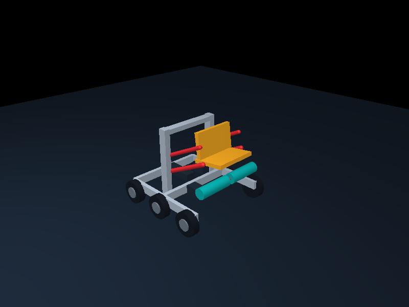
Roller intake feeding a four-bar lifting cradle
The open-front chassis surrounds the object while paired four-bar links keep a deep cradle approximately level through most of the lift.
Scoring sequence: Capture a lying or upright Pin between compliant rollers, settle it into the curved cradle, then raise and tip the four-bar to place it onto a Goal.
Chassis: u_front; traction; 6 wheels; 390 × 350 mm rails; 101.6 mm wheels; 200 rpm gearing
Uncertainty: Approximate cradle clearances and passive orientation behavior require development; joints and controllers are not implemented in this preview.
AI design JSON02 · Belt-Mast Cup Fork
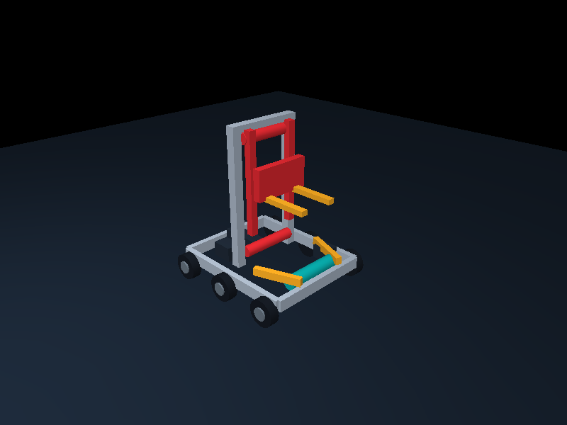
Two-stage belt elevator with centering funnel and fork carriage
A compact nested mast separates vertical lift from the short placement stroke, avoiding a long swinging arm.
Scoring sequence: Draw a Cup through the low funnel, center it against the carriage, elevate it vertically, and extend the fork slightly forward for controlled placement.
Chassis: rectangle; mixed_omni; 6 wheels; 410 × 330 mm rails; 82.55 mm wheels; 200 rpm gearing
Uncertainty: Cup retention during carriage acceleration and belt routing are unresolved; joints and controllers are not implemented in this preview.
AI design JSON03 · Rotary Pin Indexing Drum
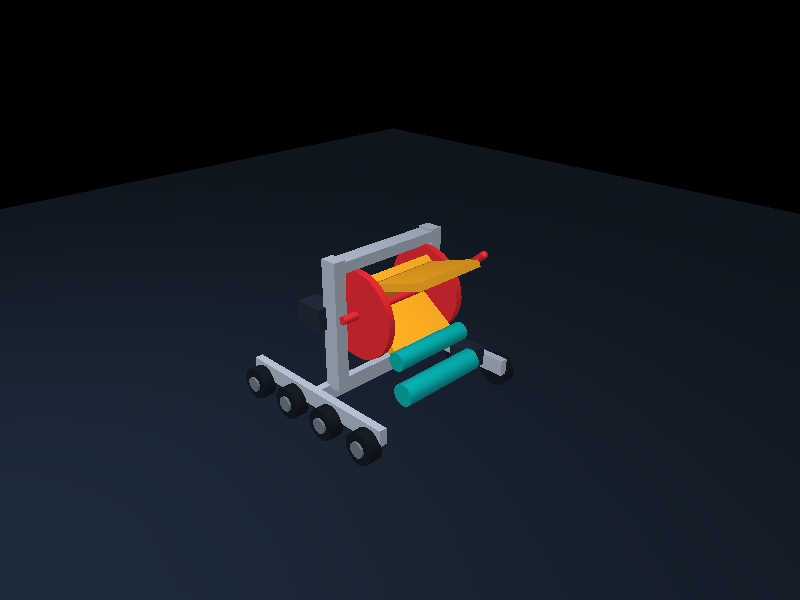
Horizontal-axis indexing drum with intake throat and discharge p‑
Acquisition, reorientation, and lift are combined in a quarter-turn pocketed drum rather than a separate arm and gripper.
Scoring sequence: Feed a Pin into one drum pocket, rotate the drum to orient and elevate it, then open the upper guide gate so the pocket rolls it onto the Goal.
Chassis: h_frame; holonomic; 8 wheels; 400 × 370 mm rails; 69.85 mm wheels; 600 rpm gearing
Uncertainty: Pocket geometry for both upright and lying Pins is approximate; joints and controllers are not implemented in this preview.
AI design JSON04 · Scissor Basket Goal Loader
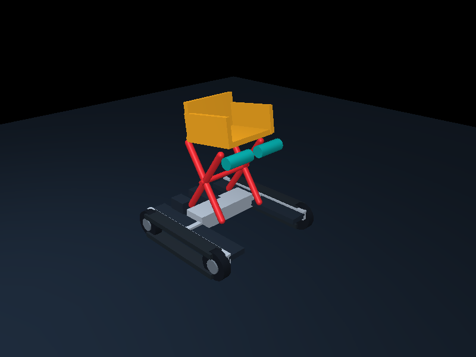
Scissor lift carrying a split-entry retention basket
The game object remains in one guarded basket from floor pickup through scoring while the symmetric scissor supplies elevation.
Scoring sequence: Sweep a Pin or Cup into the low basket, close the flexible entry rollers, raise the basket vertically with the scissor, and tilt its floor to release onto a Goal.
Chassis: twin_pod; tracks; 4 wheels; 430 × 390 mm rails; 101.6 mm wheels; 100 rpm gearing
Uncertainty: Scissor stiffness, basket tipping clearance, and track packaging are conceptual; joints and controllers are not implemented in this preview.
AI design JSON05 · Articulated Conveyor Bridge
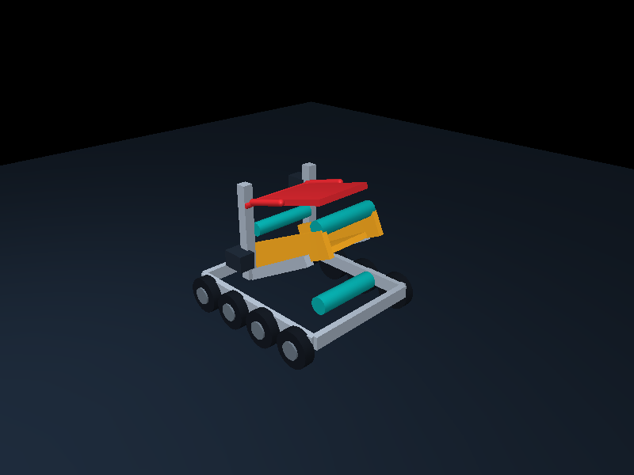
Segmented belt conveyor with an over-center scoring bridge
A continuous transfer path uses a fixed lower incline and independently pivoting upper bridge instead of lifting the object in a carriage.
Scoring sequence: Collect a lying Pin or Cup onto the lower conveyor, carry it up between side guides, then rotate the upper conveyor segment over the Goal for a gentle powered discharge.
Chassis: rectangle; traction; 8 wheels; 445 × 345 mm rails; 101.6 mm wheels; 200 rpm gearing
Uncertainty: Transition behavior between conveyor segments and object stability near the hinge remain unresolved; joints and controllers are not implemented in this preview.
AI design JSON06 · Turntable Crane Collar
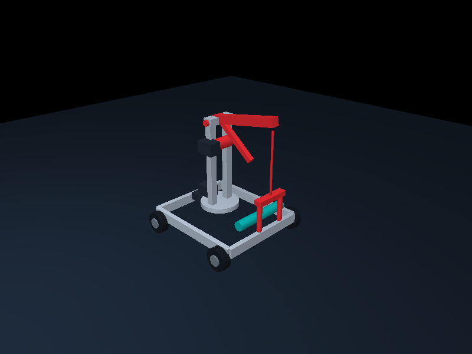
Slewing crane with cable-suspended capture collar
A rotating crane separates vertical cable lift from horizontal placement and can approach Goals from several headings.
Scoring sequence: Side rollers center an upright Cup or Pin beneath the collar; the collar closes, the winch raises it, and the turret slews the boom over the selected Goal for lowering.
Chassis: rectangle; holonomic; 4 wheels; 390 × 330 mm rails; 82.55 mm wheels; 200 rpm gearing
Uncertainty: Controlling swing and preventing the suspended object from twisting during travel.
AI design JSON07 · Pocket Chain High-Side Loader
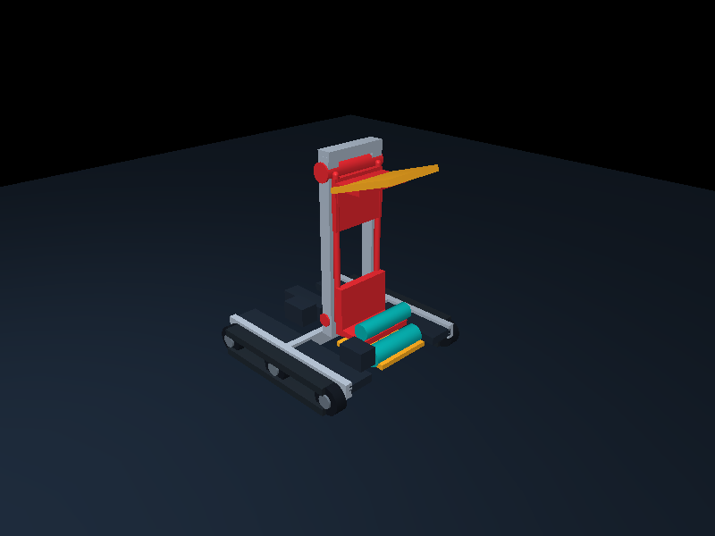
Continuous bucket-chain elevator with tipping head chute
The object rides in circulating pockets rather than on a lifting carriage, allowing acquisition to continue while another pocket approaches scoring height.
Scoring sequence: A low roller throat pushes lying or upright objects into a flexible pocket; paired chains carry successive pockets upward and invert them over a short top chute.
Chassis: twin_pod; tracks; 6 wheels; 420 × 350 mm rails; 69.85 mm wheels; 100 rpm gearing
Uncertainty: Pocket shape must retain both orientations without jamming as it rounds the upper sprockets.
AI design JSON08 · Lead-Screw Tilting Table
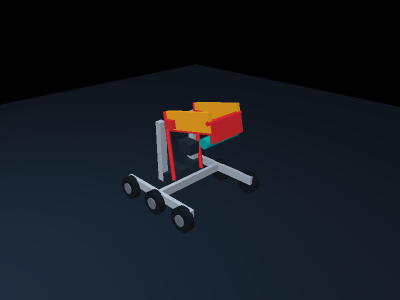
Differential lead-screw lift table with powered orientation nest
Elevation and controlled discharge come from differential screw extension, without a mast, swinging boom, or scissor stack.
Scoring sequence: Counter-rotating floor rollers draw an object onto a V-shaped table; two independently driven screw struts raise and tilt the table until its front gate opens over a Goal.
Chassis: h_frame; mixed_omni; 6 wheels; 400 × 360 mm rails; 101.6 mm wheels; 100 rpm gearing
Uncertainty: The screws and table guides may experience high side loading when the object sits near the front edge.
AI design JSON09 · Arc-Rail Placement Trolley
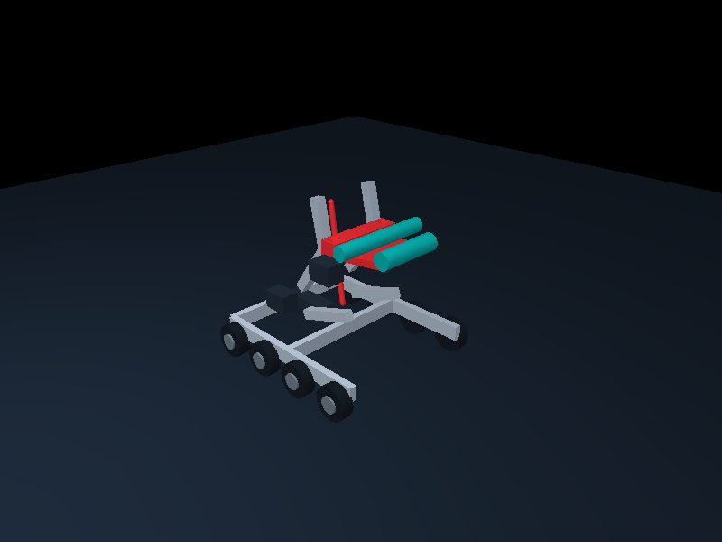
Curved-rail trolley with roller cradle
A constrained trolley follows a curved placement path instead of translating on a straight elevator or rotating about one arm pivot.
Scoring sequence: The open bay admits a Pin or Cup into the roller cradle; a chain-driven trolley follows paired quarter-arc rails, carrying the cradle upward and forward before a wrist roller meters the object onto the Goal.
Chassis: u_front; traction; 8 wheels; 430 × 355 mm rails; 82.55 mm wheels; 200 rpm gearing
Uncertainty: Low-friction guidance through the segmented arc and chain tension around the curve require development.
AI design JSON10 · Twin-Rocker Hand-Off Loader
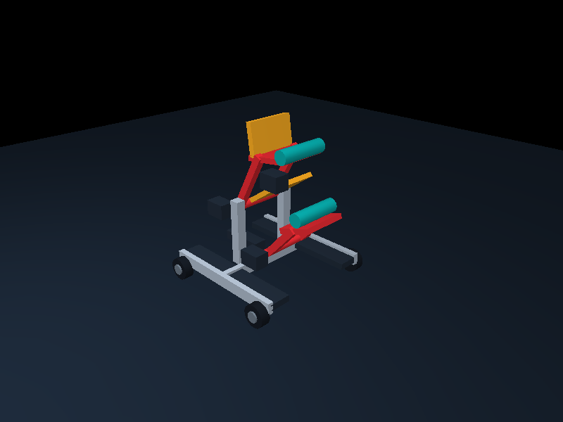
Sequential rocking saddles with controlled hand-off
Two short rotary stages pass the object between guarded nests, avoiding one large lift arm and keeping each stage within the chassis envelope.
Scoring sequence: A front saddle captures a lying or upright object, rocks rearward to stand and elevate it, then transfers it into a second saddle that rocks forward to the chosen Goal height.
Chassis: twin_pod; mixed_omni; 4 wheels; 410 × 370 mm rails; 69.85 mm wheels; 600 rpm gearing
Uncertainty: Reliable hand-off timing across varying Pin and Cup orientations is the principal geometric risk.
AI design JSON11 · Walking-Beam Pin Stepper
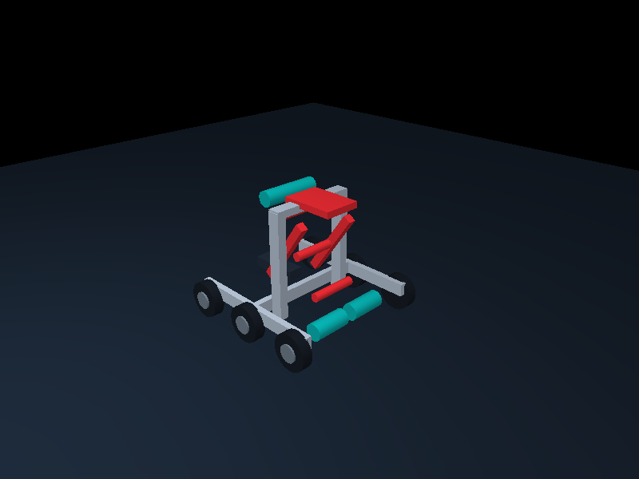
Alternating walking-beam lift with roller entry and top pusher
Two oscillating ladder beams alternately capture and raise the object through discrete guarded stages rather than carrying it in one carriage.
Scoring sequence: Floor rollers draw in a lying Pin; alternating toothed beams support and step it upward, while a top cross-roller turns it upright and a short pusher slides it onto the Goal.
Chassis: h_frame; traction; 6 wheels; 410 × 360 mm rails; 101.6 mm wheels; 200 rpm gearing
Uncertainty: Approximate tooth spacing and beam phasing needed to retain both Pins and Cups during each hand-off.
AI design JSON12 · Shoulder-Slide Cup Tongs
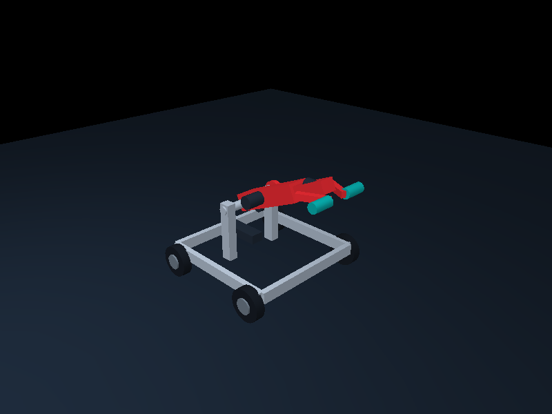
Luffing shoulder with telescoping rack boom and opposed cup tongs
A powered shoulder supplies height while a rack-driven telescoping boom independently supplies reach; the object is retained by rim tongs rather than a tray.
Scoring sequence: A low compliant mouth centers an upright or tilted Cup, the opposed tongs close below its rim, the shoulder raises it, and the nested boom extends for controlled release above a Goal.
Chassis: rectangle; holonomic; 4 wheels; 395 × 385 mm rails; 101.6 mm wheels; 200 rpm gearing
Uncertainty: Tong geometry and compliance required to accommodate approximate Cup and Pin flange profiles without binding.
AI design JSON13 · Skew-Roller Spiral Tower
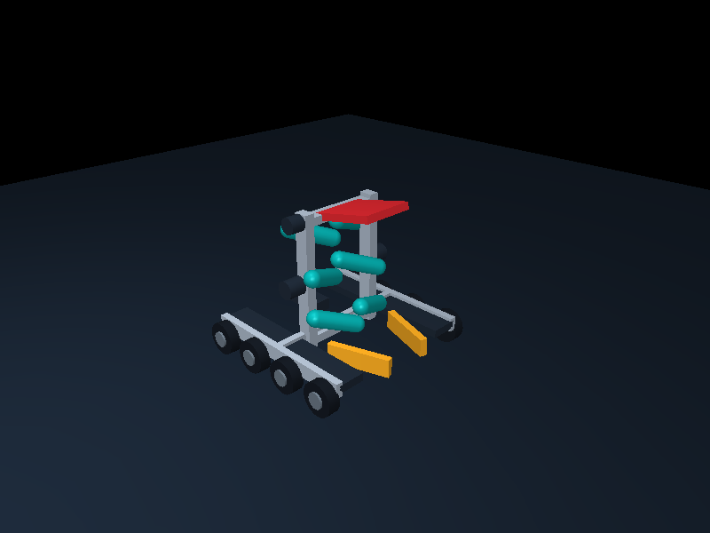
Counter-rotating skew-roller chimney with top placement gate
Helical surface motion from angled rollers both orients and elevates the object continuously, without a lift carriage, bucket chain, or conveyor belt.
Scoring sequence: A wide floor throat captures a lying Pin or Cup; lower rollers center it, successive opposing skew rollers rotate and advance it upward, and a hinged top gate guides the emerging object onto the selected Goal.
Chassis: twin_pod; mixed_omni; 8 wheels; 420 × 390 mm rails; 82.55 mm wheels; 600 rpm gearing
Uncertainty: Roller skew angle and surface compliance needed to generate upward travel without ejecting irregularly oriented objects.
AI design JSON14 · Inverting Yoke Goal Capper
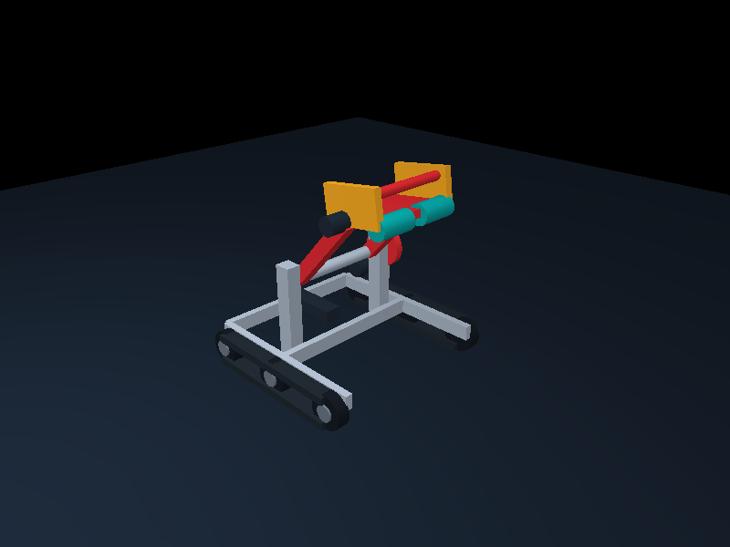
Large-radius rotary yoke with split scoop and retention hoop
One open yoke deliberately inverts the captured object through a broad arc, using gravity against a retention hoop to convert floor orientation into top-down placement.
Scoring sequence: The open front surrounds a lying Cup or Pin, split rollers pull it into the scoop, and the side-driven yoke rotates the retained object over the robot into an upright, downward placement pose above a Goal.
Chassis: u_front; tracks; 6 wheels; 430 × 400 mm rails; 82.55 mm wheels; 100 rpm gearing
Uncertainty: Clearance between the rotating object, chassis opening, and Goal across the approximate object dimensions.
AI design JSON15 · Cartesian Goal-Side Gantry
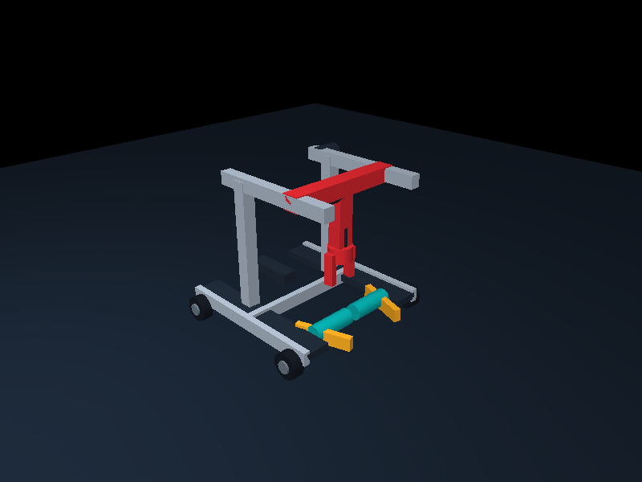
Overhead longitudinal gantry with rack-lowered expanding gripper
Independent horizontal and vertical Cartesian axes approach the object and Goal from above while the chassis remains clear around the staging bay.
Scoring sequence: A front funnel and centering rollers stage an upright object between the pods; the overhead carriage travels forward, lowers an internal expanding gripper, lifts the object vertically, traverses beyond the bumper, and lowers it onto a Goal.
Chassis: twin_pod; holonomic; 4 wheels; 440 × 410 mm rails; 69.85 mm wheels; 200 rpm gearing
Uncertainty: Required mast stiffness and gripper expansion range for stable top-down handling at the highest approximate Goal.
AI design JSON16 · Helical Paddle Pin Riser
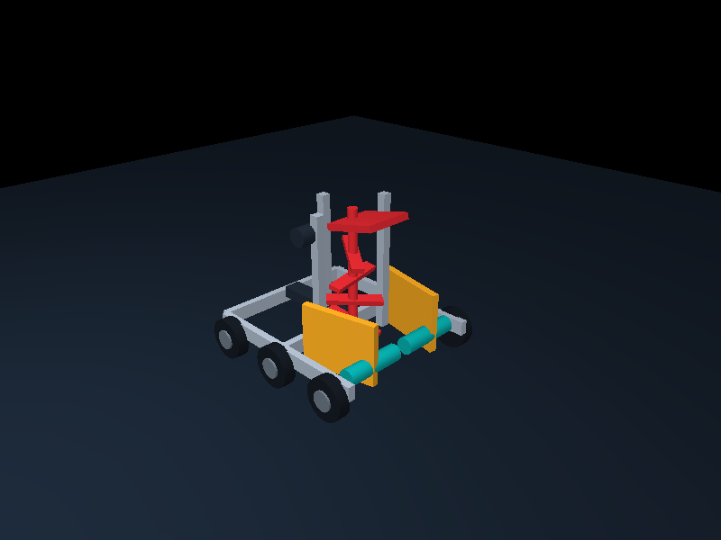
Vertical auger elevator with compliant paddle flights and a top e
A central auger-like paddle stack continuously elevates and reorients the object without a carriage, circulating bucket, or belt conveyor.
Scoring sequence: Front rollers draw a lying or upright object into the guarded well; rotating helical paddles raise and turn it, then a short top gate directs it onto the Goal.
Chassis: u_front; traction; 6 wheels; 450 × 380 mm rails; 101.6 mm wheels; 200 rpm gearing
Uncertainty: Approximate paddle pitch, guide clearance, and flange interaction require development; joints and controls are not implemented in this preview.
AI design JSON17 · Inclined Winch Cradle
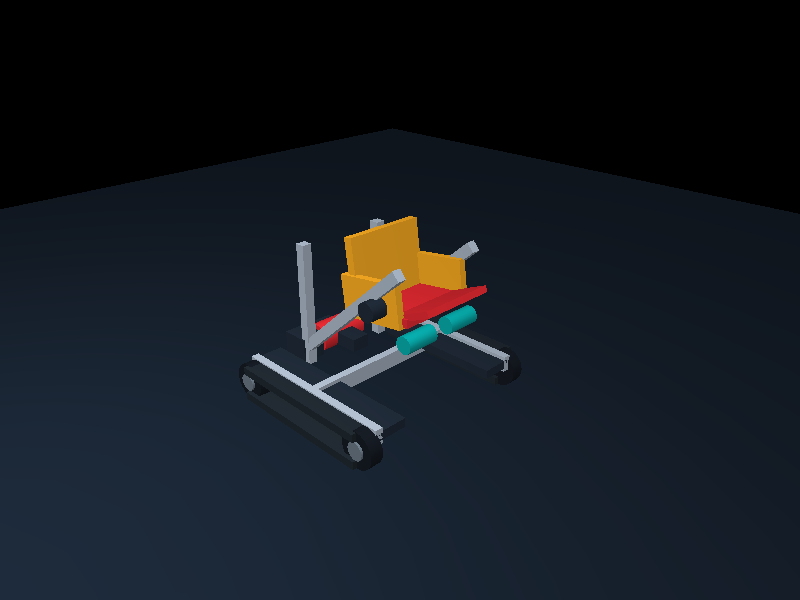
Cable-winch funicular cradle on paired inclined rails
The loaded cradle climbs a fixed diagonal railway under cable tension, combining lift and forward reach without a vertical mast or curved trolley path.
Scoring sequence: A split front scoop captures the object, the winch pulls its wheeled cradle up straight inclined rails, and a hinged nose plate rolls the object gently onto the selected Goal.
Chassis: twin_pod; tracks; 4 wheels; 400 × 390 mm rails; 82.55 mm wheels; 100 rpm gearing
Uncertainty: Cable routing, cradle retention on abrupt motion, and useful rail angle remain unresolved; joints and controls are not implemented in this preview.
AI design JSON18 · Barrel-Cam Carousel Setter
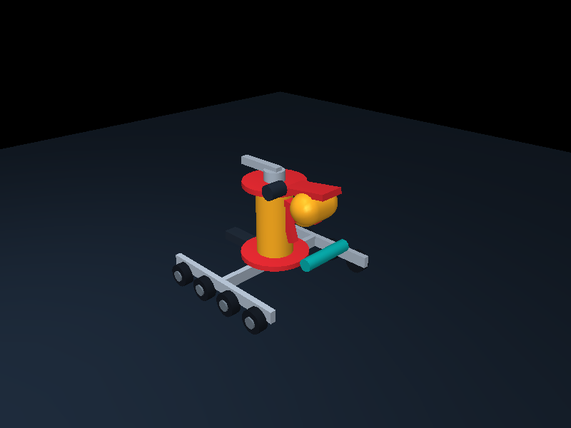
Vertical-axis staging carousel with barrel-cam follower saddles
Rotation around a shaped central cam simultaneously indexes and elevates individual saddles, providing staged storage and lift without a conventional linear elevator.
Scoring sequence: Side rollers feed an object into a radial saddle; carousel rotation indexes it around the column while a cam follower raises that saddle, and a radial pusher completes placement.
Chassis: h_frame; holonomic; 8 wheels; 430 × 400 mm rails; 69.85 mm wheels; 200 rpm gearing
Uncertainty: The cam profile, follower loading, and reliable retention of both Cup and Pin orientations are only conceptual; joints and controls are not implemented.
AI design JSON19 · Sector-Arm Rim Nest
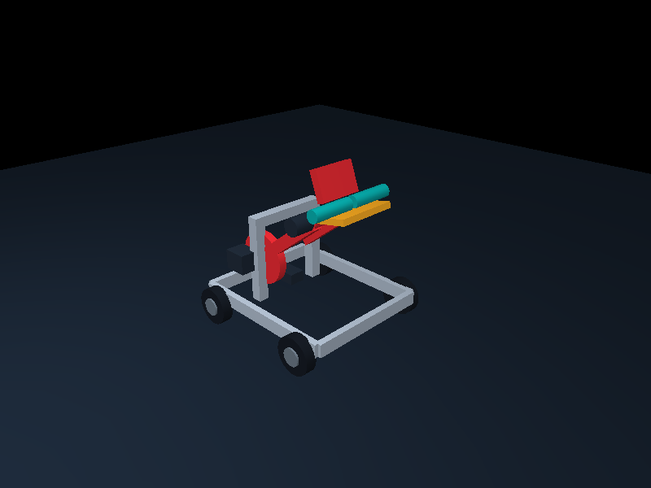
Geared sector shoulder with independently rotating rim nest
A broad sector-geared shoulder carries a shallow rim-supporting nest while a coaxial wrist controls orientation independently of the lift arc.
Scoring sequence: A floor-level roller nest centers a Cup or Pin flange, the large geared shoulder sweeps the nest upward, and wrist rotation establishes the desired upright or lying placement attitude.
Chassis: rectangle; mixed_omni; 4 wheels; 420 × 350 mm rails; 101.6 mm wheels; 100 rpm gearing
Uncertainty: Sector backlash, wrist torque, and retention through the sweep are undetermined with the approximate object geometry; joints and controls are not implemented.
AI design JSON20 · Toggle-Knee Pop-Up Tray
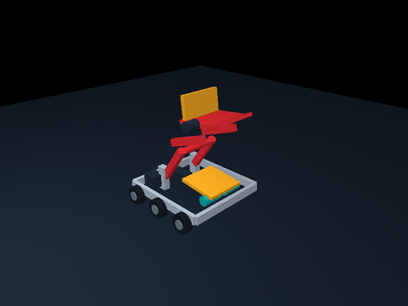
Over-center knee linkage with low transfer tray and terminal tip
A compact folded knee straightens into a tall load-bearing column, gaining height through an over-center serial linkage rather than crossed scissor members or a mast.
Scoring sequence: Counter-rotating front rollers load a low tray; a powered knee unfolds two serial link pairs to raise the tray nearly vertically, then a terminal tipping link meters the object onto the Goal.
Chassis: rectangle; traction; 6 wheels; 390 × 360 mm rails; 82.55 mm wheels; 600 rpm gearing
Uncertainty: Over-center force variation, side stiffness, and safe tray attitude need investigation; joints and controls are not implemented in this static preview.
AI design JSON